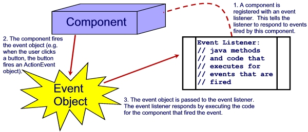
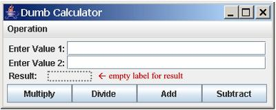
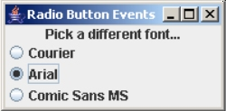

Event handling refers to the process of writing code that allows programming tasks to execute when a user interacts with an interface's components. For example, if you have two text boxes that ask the user for two numeric values and a button that says "Multiply", the code you write to make the product of the first text field and second text field appear in a label is an event handler.
Events can be triggered by the user, or by other components. Some examples of events that could occur in a program are:
When an event occurs, we say that an event is fired. An event is fired by a component, although this event may be triggered by a user. For example, when the user clicks a command button, this causes the button to fire a "click" event; the user triggers the firing of the event from the button.
When an event is fired in Java, an event object is instantiated automatically. There are a set of classes that define specific event objects. For example, a KeyEvent object is instantiated when an event using the keyboard is fired, a MouseEvent object is instantiated when an event using the mouse is fired, and a WindowEvent object is instantiated when an event with the current window or frame is fired. Event objects contain information about the event that was fired, such as the address of the component that fired the event.
Some kind of object in your program needs to be listening for events. An Event Listener is an object that, when an event is fired, executes a piece of code to handle that event. For example, when the user clicks the "Multiply" button, the button fires an event (an event object is instantiated). The event listener object "captures" that event object and then executes any code you've instructed the listener to invoke. For example, your event listener could have code that instructs it to multiply the two text field values and place the result in a label.
A component must be registered to fire events to a specific event listener. If the "Multiply" button is not registered with the event listener, it will not fire events, even when the user clicks the button. When a component is registered with a particular event listener, it means that the event listener will respond to events fired by that component. The reason you have to do this is because you might have a program with more than one event listener -- if a component fires an event, how would you know which listener should respond? Registering a component with a listener says that a listener is supposed to respond to events from that particular component.
In summary, a component that is registered with an event listener can fire events to that listener object. When an event is fired, an event object is created and passed to the event listener object. The event listener object will then execute a set of instructions when it receives that event object.

| Event handling classes are part of the java.awt.event package. Don't forget to import this package in your programs that contain event handlers. |
Action events are events that occur when the user clicks a component such as a button or menu item. Action events also occur when the user presses the Enter key while the focus is in a text box. Action event objects are instances of the ActionEvent class and the ActionListener class can be used to create listener objects for action events.
Action events are the easiest to learn and work with so we'll use these as a means of learning how to write event handlers. There are three steps to writing an event handler:
To demonstrate these steps, we're going to use a program with the following interface:

(the Operations menu contains the items Multiply, Divide, Add, and Subtract, plus a separator, and an Exit item)
The ActionListener object contains the code that will execute when an event is fired. For some applications this might be in a separate class, but you will often need to have this code in the same class as your interface because it will need to be able to access the other components on your form. For example, the "Multiply" button will need to be able to grab the contents from two JTextField components and place a value in a JLabel component. These components would have to be declared as public attributes of your interface class if your action listener were in a separate class. An alternative is to make your interace its own action listener. We can do this by making the interface class implement the ActionListener interface.
To add an interface to your class, you use the implements keyword:
public class Calculator extends JFrame implements ActionListener
This defines our class so that it implements the ActionListener interface. In other words, the interface is going to listen for and respond to events fired by its components. The nice thing about interfaces is that you can implement more than one, as we will see later in the course.
Next, we need to register the relevant components with the action listener object. We only register components that will be firing action events. In our example, on the four buttons will need to be registered with the listener object. To register a component, you use the component's addActionListener() method. This method needs to know which event listener object you want to register the component with; this is passed into the method as an argument. Since our interface itself is the action listener object, we can use this as the action listener argument:
cmdMultiply.addActionListener(this);
Lastly, you write the code that is going to execute when the events are fired. Since these are action events we're handling, we need to add the ActionListener's actionPerformed() method. The actionPerformed() method, being an abstract method defined in the ActionListener class, must be implemented before you can compile your program, otherwise you'll get a compile error.
The actionPerformed() method has an ActionEvent parameter that contains the action event object that was fired. In this method, you can place any code that needs to execute when an action event is fired. Sometimes you may need to examine the ActionEvent parameter. For example, in our program we want to perform different tasks based on which button the user clicked. We can find out from the ActionEvent object which button fired the event by using its getSource() method. This method returns a reference (of type Object) to the object that fired the event.
In our program, we might want to write something such as:
If source of event was cmdMultiply Then label gets the result of txtOne * txtTwo Else If source of event was cmdDivide Then If txtTwo isn't a 0 Then label gets the result of txtOne / txtTwo Else label gets the value "Error!" Else If source of event was cmdAdd then label gets the result of txtOne + txtTwo Else If source of event was cmdSubtract then label gets the result of txtOne - txtTwo
In code, we could start off with something like:
public void actionPerformed(ActionEvent e)
{
if (e.getSource() == cmdMultiply)
// multiply values and put in label
// etc...
}
We use the double-equals (==) to compare because we are comparing the references (memory addresses) of two objects - the one returned by getSource() and cmdMultiply. The getSource() method returns the memory address of the component that fired the event; if this address matches the address of the cmdMultiply component, then it was the cmdMultiply button that fired the event.
To finish the rest of the actionPerformed() method, we need to know how to get the values from the two text fields. Recall that the text field (and the label) has a method called getText() that returns a String value of whatever is inside the text field component. Because we want to calculate with the two text box values, we need to convert them into numerics. We might need to do something such as:
double val1 = Double.parseDouble(txtOne.getText()); double val2 = Double.parseDouble(txtTwo.getText());
Similarly, the label (and a text field, for that matter) has a setText(String) method that places a String into the component. We can use setText() on the label object to show the output of our calculation. It has to be a String, so we need to use String.valueOf() to convert:
lblResult.setText(String.valueOf(val1 * val2));
Write the code necessary to make the multiply button work.
To finish off the program, you will probably consider adding the rest of the if statements as outlined in the pseudocode from earlier. You'll probably find that the statements which place the text box values into numeric variables are redundant! It would be preferable to place these statements above the selection statement so that they execute only once at the beginning of the actionPerformed() method:
public void actionPerformed(ActionEvent e)
{
double val1 = Double.parseDouble(txtOne.getText());
double val2 = Double.parseDouble(txtTwo.getText());
if (e.getSource() == cmdMultiply)
lblResult.setText(String.valueOf(val1 * val2));
else if ((e.getSource() == cmdDivide)
// etc....
}
Finish all the code so that all four buttons work.
In the previous section we learned how to handle action events from buttons on the frame. You can follow the same process when working with some other components, such as radio buttons. To demonstrate, we'll use the following interface, which you should create:

Making event handlers for radio buttons is exactly the same as making event handlers for regular buttons. Recall the three steps from the previous session:
As before, we can use the interface as the listener object, and register the three radio buttons using addActionListener(this). Your event handler code should follow something like:
If event source is optCourier Change label font to Courier Else if event source is optArial Change label font to Arial Else if event source is optComic Change label font to Comic Sans MS
You can change the label's font using the setFont() method. You learned last term how to create a new font object, but if you don't remember, look up the constructors of the Font class.
Write the code to make this program work!
Try the same program using a combo box instead of radio buttons. You might need to check the documentation for the JComboBox control -- look for methods that allow you to check and see what item has been selected. Don't forget to configure your combo box: Do not allow the user to type in their own values; they can only select a font from the list.
You can handle menu events just like you do with JButtons, as JMenuItem components can fire ActionEvent objects. How would you write the event handler for a File/Exit option? The exact same way you might write it for a JButton object:
public void actionPerformed(ActionEvent e)
{
if (e.getSource() == mnuFileExit)
{
int ok = JOptionPane.showConfirmDialog(null,
"Are you sure you wish to exit?", "Exit",
JOptionPane.YES_NO_OPTION, JOptionPane.QUESTION_MESSAGE);
if (ok = JOptionPane.YES_OPTION)
System.exit(0);
}
}
It is common in most programs to have more than one component to perform the same task. For example, you might have an Exit menu option and also an Exit button. In this style of interface, you have to make sure you don't repeat code segments for components that perform the same task. For example, you should only have one chunk of code that exits the program; you shouldn't have one chunk for the menu item and a second chunk of exactly the same code for the button.
There are a couple of ways you can handle events for more than one component performing the same task. You could add a second condition to your if statement:
public void actionPerformed(ActionEvent e)
{
if (e.getSource() == mnuFileExit || e.getSource() == cmdExit)
{
int ok = JOptionPane.showConfirmDialog(null,
"Are you sure you wish to exit?", "Exit",
JOptionPane.YES_NO_OPTION, JOptionPane.QUESTION_MESSAGE);
if (ok = JOptionPane.YES_OPTION)
System.exit(0);
System.exit(0);
}
}
If for some reason you don't want the compound conditions, you can use the action command attribute. The actionCommand is a simple string value you can assign to a component. By default, the actionCommand for JButtons and JMenuItems is the text on the button or menu item. If you create a JButton with the caption "Exit", both components will have the same action command, and you can use the code:
public void actionPerformed(ActionEvent e)
{
if (e.getActionCommand().equals("Exit"))
{
int ok = JOptionPane.showConfirmDialog(null,
"Are you sure you wish to exit?", "Exit",
JOptionPane.YES_NO_OPTION, JOptionPane.QUESTION_MESSAGE);
if (ok = JOptionPane.YES_OPTION)
System.exit(0);
}
}
This code is a bit simpler and requires less work. But what if you menu text was "Exit Program" and your button's caption was "Exit"? These are two different actionCommands! You can set the action command of a component when you create it using the setActionCommand() method. For example, when you create your exit menu item:
// defined outside constructor:
JMenuItem mnuFileExit = new JMenuItem("Exit Program");
:
:
// inside constructor:
mnuFileExit.setMnemonic(KeyEvent.VK_X);
mnuFileExit.addActionListener(this);
mnuFileExit.setActionCommand("Exit");
By setting its action command, you can easily test for the action command "Exit" for both the mnuFileExit and cmdExit components.